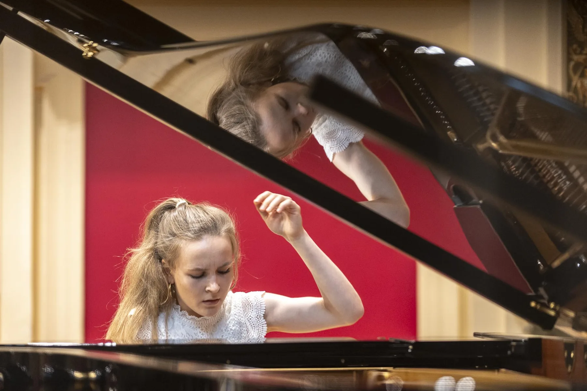

01 / Klavier
Klang in
Bewegung.
Beim 3. Internationalen Wiener Klavierwettbewerb erhielt Cosima 2026 den zweiten Preis in Kategorie 4. In dieser Kategorie wurde kein erster Preis vergeben.
Offizielles Ergebnis (öffnet in neuem Tab, PDF)